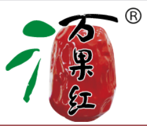
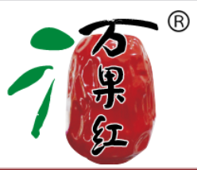
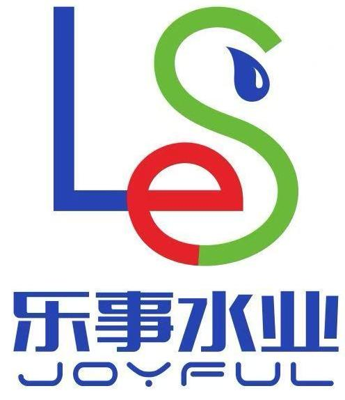
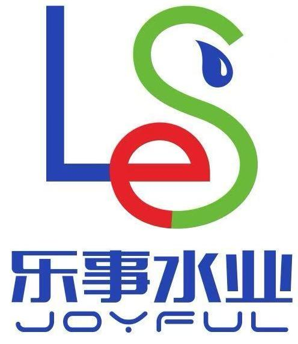

中策橡胶：迈向“未来工厂”
迈向“未来工厂”，看中策清泉如何用零代码搭建数字化车间
百得精密：简道云+FineReport+智能硬件，玩转仓储管理
上汽大众：零代码搭建线上办公云平台
科林电气：专精特新“小巨人”企业的数字创新指南

成本节约近百万，办公效率提升80%——简道云助力银轮二次创业
没有IT部门的制造工厂，培养出了十四位“应用开发专家”
中策天津：从细小需求到核心业务，用零代码构建敏捷开发底座
立足“制造”深耕“智造”，零代码助力中复连众转型升级

龙辉起重：传统乡镇制造企业到底如何下好数字化这盘大棋？

上汽通用五菱重庆：突破瓶颈，提升效能，简道云助推物流管理变革

四川众友：零代码构建计划、采购、报工、质量的全流程，锻造数字智能工厂

乐森机器人：简道云促进全流程闭环，生产效率提升80%！

五洋医疗：简道云在制造业中的灵活实用，实现数字化派工和产品可追溯管理
威尔雅：携手简道云WMS，开启仓储“数”变新征程
天津飞悦：简道云助力实现全过程数字化管理
“塑”造新程——注塑行业的数字化智造转型蓝图

针线穿数据，织就新制造：简道云助力亦恩纺织数字化转型
上海巴斯夫聚氨酯：零代码构建可复制的跨国协同平台

华纳集团：这家“中国纳米钙第一强”，靠它实现了全员数字化创新
茂名石化：零代码助力打通数字化“最后一公里”
福克斯波罗：零代码平台助力数字化转型，实现300%ROI的经验分享
趵突泉：新旧厂迭代，简道云助力百年大厂，趵突泉信息化转型激发新活力
简道云助力“北京壹号”酒厂从0到1的数字化建设，实现无纸化工厂管理。
纳曲酒业：数字化转型为公司节省了284万投入！
 

万果红酒业：ERP数字化系统介绍
蒙牛乳业：600名全民开发者，在数字世界实现高效创新
乐纯：如何高效管理食品行业线下渠道预算

粤加大：从低代码转到零代码，粤加大如何通过信息化节约成本40W+?
外婆味道：抓住信息化的转型机遇，实现餐饮和数据的碰撞
食品行业零代码数字化建设- 汇祥食品数字化转型
百草味：简道云在食品商贸行业中提供全面可扩展的长尾需求解决方案
 

和士美饮品：简道云生长型平台 —— 助力和士美饮品实现工厂管理数字化转型
综艺包装：智能表单+云端协作，简道云实现传统包装企业无纸化革命
大吉包装： 简道云上构建CRM+ERP，覆盖90%企业业务！
华测检测：简道云助力实现智能化多维管理，轻松驾驭管理挑战！
万世检测：零代码开发助力中小型环境检测企业实现信息化管理
赣州章洋工程检测：数字化管理赋能工程质量检测新标杆